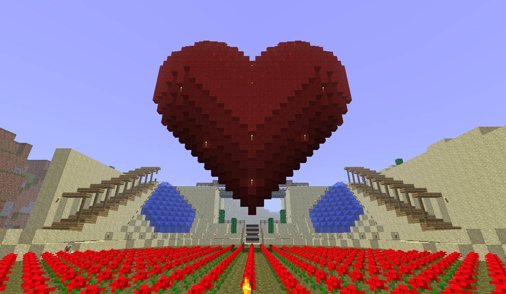

Майнкрафт
При входе в мир Майнкрафта геймер получает доступ к базовому персонажу. Это Стив. Он обладает минимальными умениями, но его можно прокачать до крутого героя или заменить на более сильную версию. В зависимости от того, какой выберет Стив режим прохождения, он получит возможность создавать, строить, гулять, летать, сражаться.
Выживание — один из наиболее интересных режимов, который правда, спустя какое-то время надоедает из-за отсутствия разнообразия в действиях, но это легко лечится сторонними модификациями. Попав в новый мир, в вашем инвентаре — пусто. Нет вообще ничего, ни одежды, ни оружия, ни еды! Так что нужно действовать и скорее что-то делать. Для начала сориентируйтесь по солнцу, сколько сейчас времени. Если солнце в зените, то около 12 и по аналогии с реальным миром.